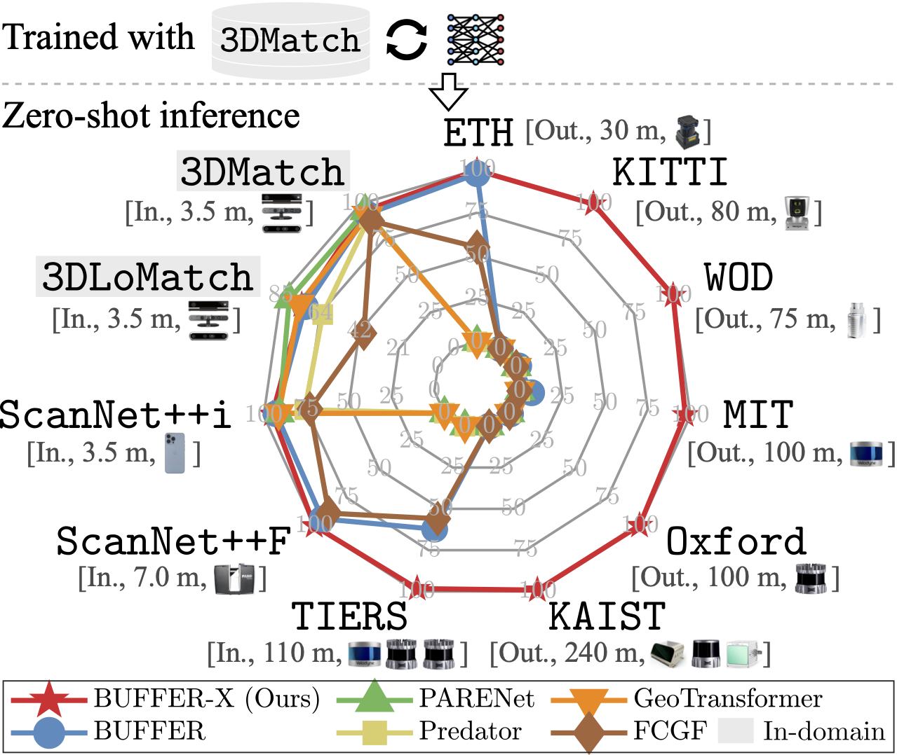

|
Minkyun Seo
I am a incoming MS/PhD student at Seoul National University (SNU), advised by Jaesik Park.
Currently, I am completing my undergraduate studies at SNU, double-majoring in Computer Science and Engineering and Architecture Engineering.
I'm interested in Point Cloud Registration and 3D Reconstruction.
Email /
Github /
LinkedIn
|
|
News
- Jun. 2025: Our work BUFFER-X was accepted to ICCV 2025.
Research
|

|
BUFFER-X: Towards Zero-Shot Point Cloud Registration in Diverse Scenes
Minkyun Seo*,
Hyungtae Lim*,
Kanghee Lee,
Luca Carlone,
Jaesik Park
ICCV, 2025
[
Code
/
arXiv
]
We propose BUFFER-X, a zero-shot point cloud registration pipeline for robust performance across diverse, unseen environments.
-
Geometric Bootstrapping: Eliminates manual tuning by adaptively determining key parameters like voxel size and search radii to each new scene.
-
Robust Generalization: A single model trained on one dataset generalizes effectively across 11 different indoor and outdoor scenarios without any modification.
|
Scholarships
-
Graduate Research Fellowship
Issued by DB Group
2025 - Present
-
National Excellence Scholarship
Issued by South Korea Government
2021 - 2024
-
Academic Excellence Scholarship
Issued by Seoul National University
2019 - 2021, 2024
|
{kind=link}